Introduction
This note documents, step by step, how we built a small enterprise-style network inside VMware Workstation and protected it with a firewall, VLANs, a DMZ and an intrusion detection system. Everything is built by hand, from the virtual machines to the firewall rules, so that every choice (why a zone exists, why a port is open, why a rule comes first) is understood and can be tested.
It is the first part of a larger lab. The next parts use this network as a target: attack simulations from Parrot, turning Suricata into an IPS, and adding a WAF in front of the web server.
What we are building
- A firewall (pfSense) with one interface per security zone and a default-deny policy.
- A switch with VLANs: a Debian VM configured as a VLAN-aware bridge, connected to the firewall by a single trunk.
- A DMZ that publishes a website: an Nginx reverse proxy in front of an Apache and PHP server running DVWA, a web application that is vulnerable on purpose.
- A protected internal network: a database and file server, the user machines, and a separate management network.
- A forward proxy (Squid), so that users reach the Internet only through a controlled point.
- A sensor (Suricata) that watches the DMZ and the VLAN trunk and raises alerts.
The architecture
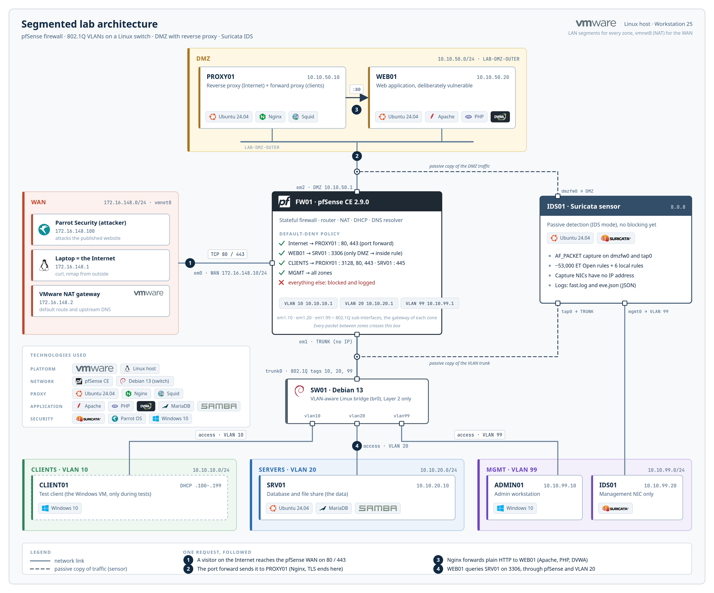
The lab environment
Everything runs on a Linux host with VMware Workstation 25 and 15 GB of RAM. The WAN uses VMware NAT (vmnet8, 172.16.148.0/24). Every other zone is a LAN segment, a private virtual network that exists only between the VMs, so nothing can leak to the real network of the host.
| VM | System | Role | Zone | Address |
|---|---|---|---|---|
| FW01 | pfSense CE 2.9.0 | firewall, router, DHCP, DNS | all zones | WAN 172.16.148.10, and .1 in every internal zone |
| SW01 | Debian 13 | VLAN-aware switch | trunk and VLANs | no IP address |
| PROXY01 | Ubuntu 24.04 | Nginx reverse proxy, Squid forward proxy | DMZ | 10.10.50.10 |
| WEB01 | Ubuntu 24.04 | Apache, PHP, DVWA | DMZ | 10.10.50.20 |
| SRV01 | Ubuntu 24.04 | MariaDB, Samba | SERVERS (VLAN 20) | 10.10.20.10 |
| ADMIN01 | Windows 10 | admin workstation, also used as test client | MGMT (VLAN 99) | 10.10.99.10 |
| IDS01 | Ubuntu 24.04 | Suricata sensor | capture on the DMZ and the trunk, management on VLAN 99 | 10.10.99.20 |
| Parrot | Parrot Security | attacker (next part) | WAN | 172.16.148.100 |
The security policy at a glance
Everything is blocked by default, and only what this table allows is opened:
| From \ To | Internet | DMZ | SERVERS | CLIENTS | MGMT |
|---|---|---|---|---|---|
| Internet | n/a | ports 80 and 443 to PROXY01 only | blocked | blocked | blocked |
| DMZ | updates only (80, 443, NTP) | n/a | WEB01 to SRV01 on port 3306 only | blocked | blocked |
| SERVERS | updates only (80, 443, NTP) | blocked | n/a | blocked | blocked |
| CLIENTS | through the proxy only | PROXY01 on 80, 443 and 3128 | SRV01 on port 445 only | n/a | blocked |
| MGMT | allowed | allowed | allowed | allowed | n/a |
These rules follow a few principles that come back all along the note:
- Default deny: if no rule allows a connection, it is dropped and logged.
- Least privilege: each rule opens only what is needed, for example one port from one source.
- Segmentation: zones are separated by the firewall. Traffic inside a zone never crosses the firewall, so exposed machines and protected machines are placed in different zones.
- Defense in depth: every server also has its own host firewall (
ufw), which repeats what pfSense enforces. - Verify everything: every rule is tested from the right machine, and every block must appear in the firewall log.
Technologies used
The logos belong to their respective projects and are only used here to identify the technologies.
How this note is organised
- The firewall VM (pfSense): creating the VM and installing pfSense.
- VLANs and IP addressing: the VLANs, the interfaces, DHCP and the WAN.
- The switch (SW01): the Linux bridge with its trunk and access ports.
- Management, DNS and Internet access: moving the management to VLAN 99 and fixing DNS.
- The servers (endpoints): SRV01, WEB01 and PROXY01.
- The firewall policy: aliases, port forwards, rules per zone and the tests.
- The Suricata sensor: installation, configuration and our first rules.
The firewall VM (pfSense)
Creating the virtual machine
Download the pfSense installer ISO from the official website ( https://www.pfsense.org/ ), then create a new virtual machine for it in VMware Workstation with 2 cores, 1100 MB of RAM and a 100 GB disk :
Tip: the Netgate download comes as a compressed
.iso.gzfile. Decompress it in a terminal withgunzip -k netgate-installer-*.iso.gz.
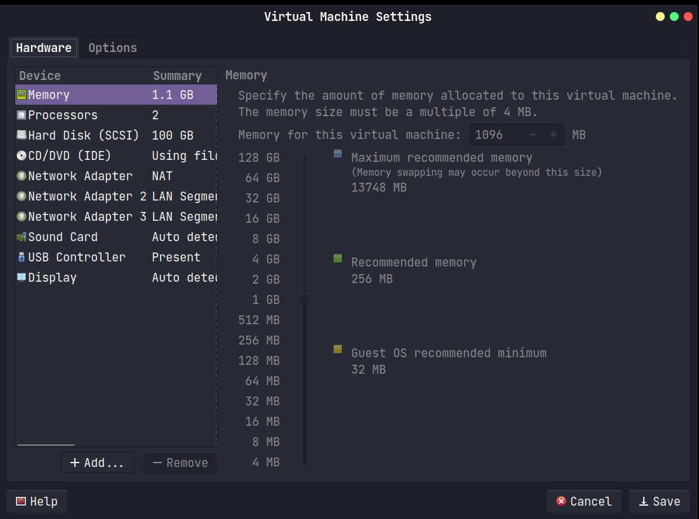
Network interfaces
We created 3 network interfaces: WAN, LAN and DMZ. The WAN uses NAT so it has access to the Internet, and the other two use LAN segments (private virtual networks that exist only between the VMs: LAB-TRUNK for the LAN and LAB-DMZ-OUTER for the DMZ) :
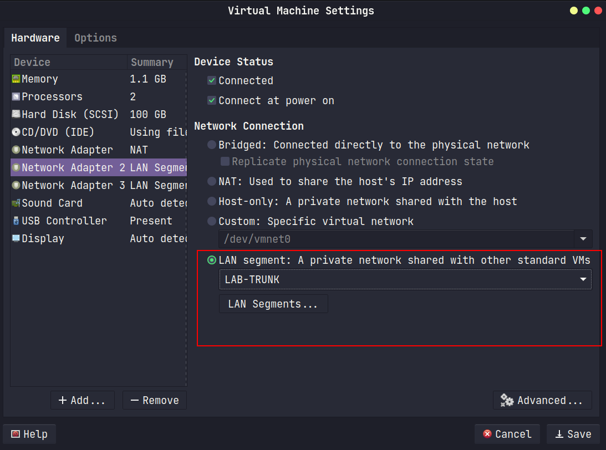
Installation
When we ran the installer, we chose the ZFS filesystem and assigned the WAN and LAN interfaces to the network adapters we created at the beginning (em0 = WAN, em1 = LAN). The DMZ adapter (em2* ) is added afterwards, in the web interface (GUI). The installer is an online installer, so the WAN (NAT) must have Internet access during the installation :
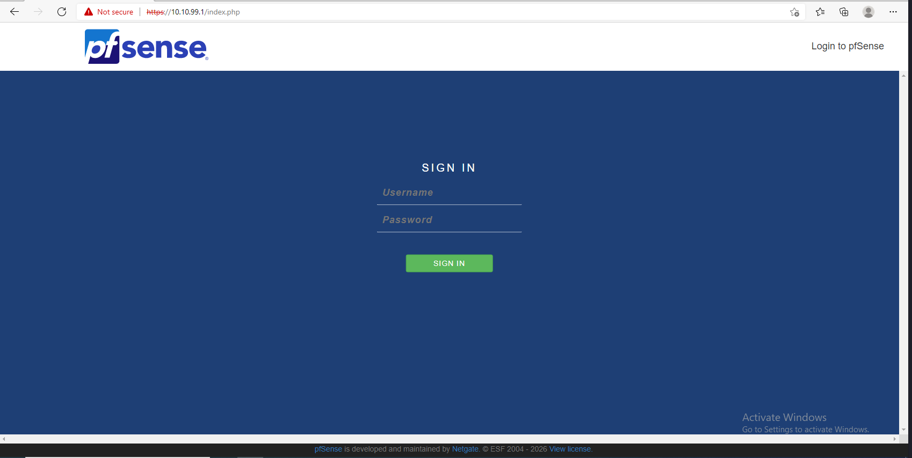
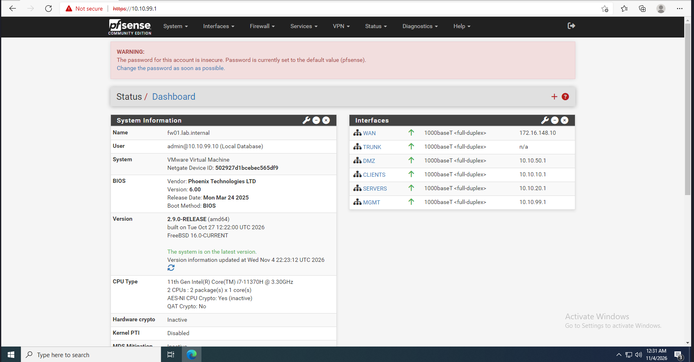
-> The pfSense login page, then the dashboard after the first configuration. We kept the default login (admin / pfsense) because this is an isolated lab, and the dashboard warns about it. At the very beginning the LAN had the default temporary address 192.168.1.1, used only to reach the web interface the first time. We moved the management to a VLAN and removed that address later (see below).
VLANs and IP addressing
Creating the VLANs
In the firewall we created 3 VLANs on the LAN interface (em1) :
- vlan99 : Management
- vlan20 : Servers
- vlan10 : Clients
A VLAN is a separate virtual network that shares the same physical cable: every frame carries a numeric tag (802.1Q) that tells which VLAN it belongs to. The tags (10, 20 and 99) must be exactly the same on pfSense and on the trunk of the switch.
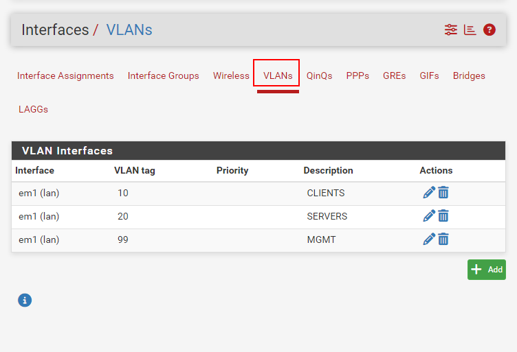
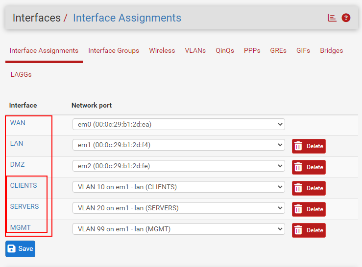
-> Interface assignments: WAN em0, LAN em1, DMZ em2, and CLIENTS / SERVERS / MGMT as VLANs on em1
IP addresses and DHCP
For each interface we set a static IPv4 address, as shown in the table below. The .1 address is pfSense's own address on that network, and it is the default gateway of the machines that live in it :
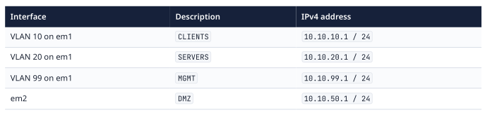
For the CLIENTS VLAN we enabled DHCP (Services › DHCP Server) with the range 10.10.10.100 – 10.10.10.199. SERVERS and DMZ have no DHCP: static addresses are predictable, which keeps the firewall rules and the logs clean.
The WAN interface
For the WAN interface we used a static IPv4 address (172.16.148.10/24, gateway 172.16.148.2, the VMware NAT gateway, added as WANGW in System › Routing › Gateways). We also unticked the Reserved Networks options (“Block private networks and loopback addresses” and “Block bogon networks”). Our WAN uses a private IP range (172.16.148.0/24), so with these options on, pfSense would silently drop everything the laptop or Parrot sends to the WAN, and the port forward would look broken. On a real Internet-facing WAN you would leave them on :
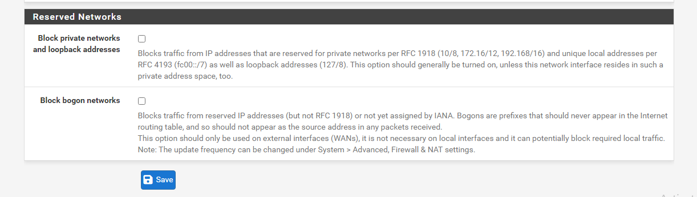
The switch (SW01)
Creating the switch VM
For the switch we used a Debian ISO and turned the VM into a switch with the Linux kernel's VLAN-aware bridge :
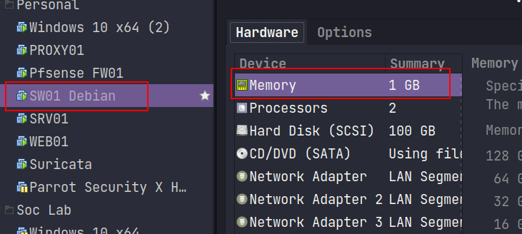
Trunk and access ports
It has one trunk port towards pfSense (all the VLANs, each frame keeps its tag) and one access port per VLAN (one VLAN, no tag: the switch adds the tag when a frame comes in and removes it when the frame goes out, so the computer never knows VLANs exist). On our Linux switch, each port is simply a network interface connected to a VMware LAN segment :
| Port | VMware segment | Type | VLAN |
|---|---|---|---|
trunk0 |
LAB-TRUNK | trunk | 10, 20 and 99 (tagged) |
vlan10 |
LAB-VLAN10 | access | 10 |
vlan20 |
LAB-VLAN20 | access | 20 |
vlan99 |
LAB-VLAN99 | access | 99 |
Preparing Debian (sudo)
Before doing anything else, we added our user to the sudo group (the installer did not do it, because a root password was set during the installation) :
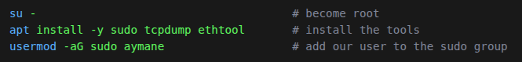
Network adapters and port names
After this we created 4 network adapters on LAN segments: one for the trunk (towards pfSense) and one for each VLAN :
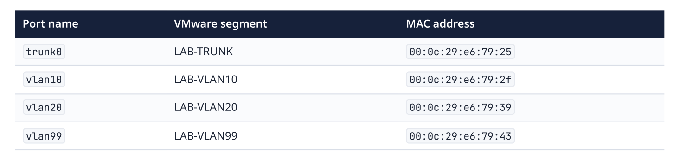
After this we named the four cards by their MAC address, with one small file per card :
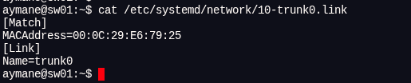
-> Why by MAC address: Linux names the cards by PCI slot (ens33, ens37, ...), not in the order of the VMware adapters, so the MAC address is the only reliable way to know which card is which. A swapped port would silently put a machine in the wrong VLAN.
We did the same for vlan10, vlan20 and vlan99, each with its own MAC address.
A .link file is a systemd-udev rule that is applied when the kernel discovers a network device. If the MAC address matches, the device is renamed. Files are read in name order (hence 10-, 11- ...).
After creating the four files we also deleted the old network stanza of the first card (allow-hotplug ens33 / iface ens33 inet dhcp) from /etc/network/interfaces, because that name no longer exists, then rebuilt the early-boot image so that the renaming happens early, and rebooted :
sudo update-initramfs -u
sudo reboot
ip -br link # expect: lo, trunk0, vlan10, vlan20, vlan99
Building the switch (VLAN-aware bridge)
Next we build the switch itself, with the sw01-vlans.sh script (stored in /usr/local/sbin/) :
ip link add name br0 type bridge vlan_filtering 1 vlan_default_pvid 0 stp_state 0
-> This creates br0: the switch itself (a “bridge”). vlan_filtering 1 means “understand VLAN tags”. vlan_default_pvid 0 means “ports belong to no VLAN until I say so” (a security measure: untagged traffic arriving on the trunk is simply dropped, so there is no native VLAN to abuse for VLAN hopping). stp_state 0 turns off the spanning-tree loop protection, which we don't need because our topology has no loops.
ip link set trunk0 master br0 # plug trunk0 into the switch
ip link set vlan10 master br0 # plug vlan10 in
ip link set vlan20 master br0 # same for vlan20
ip link set vlan99 master br0 # and vlan99
-> Plug the four ports into the switch.
bridge vlan add dev trunk0 vid 10 # the trunk carries tag 10
bridge vlan add dev trunk0 vid 20 # tag 20
bridge vlan add dev trunk0 vid 99 # tag 99
->Configure the trunk: it carries all three VLANs, with the tags kept.
bridge vlan add dev vlan10 vid 10 pvid untagged
bridge vlan add dev vlan20 vid 20 pvid untagged
bridge vlan add dev vlan99 vid 99 pvid untagged
->Configure the access ports: each one belongs to one VLAN. pvid means “any frame coming in from the computer is assigned this VLAN”, and untagged means “remove the tag when sending the frame to the computer”.
Starting the switch at boot
Finally, we need the switch to start by itself: a small systemd “service” file runs that script at every boot, because the bridge disappears at each restart otherwise.
The service file : /etc/systemd/system/sw01-vlans.service
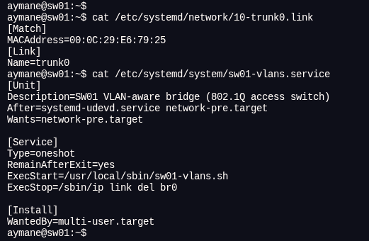
Type=oneshot+RemainAfterExit=yes: the script runs once and exits, but systemd keeps the service “active”, sosystemctl statusshows the switch as up andstopcan tear it down.After=systemd-udevd.service network-pre.target: start after the devices have been renamed. The wait loop in the script is the safety net.ExecStop=/sbin/ip link del br0: stopping the service deletes the bridge cleanly.WantedBy=multi-user.target: start at every boot. The bridge is not persistent otherwise: it is rebuilt by this service each time.
Checking the switch
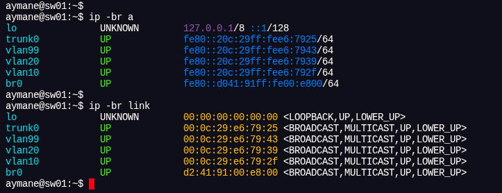
-> ip -br a and ip -br link on SW01: the four renamed ports are up, plus the bridge br0. We can also read the VLAN table of the switch :
bridge vlan show
port vlan-id
trunk0 10
20
99
vlan10 10 PVID Egress Untagged
vlan20 20 PVID Egress Untagged
vlan99 99 PVID Egress Untagged
-> It reads like the table of a real switch: the trunk is a tagged member of the three VLANs, and each access port belongs to exactly one VLAN and removes the tag on the way out.
Management, DNS and Internet access
The admin machine (ADMIN01)
For the admin machine (ADMIN01) we use a Windows 10 VM, plugged into the LAB-VLAN99 segment (the management VLAN), so the switch puts its traffic in VLAN 99. We gave it a static IP address with PowerShell :
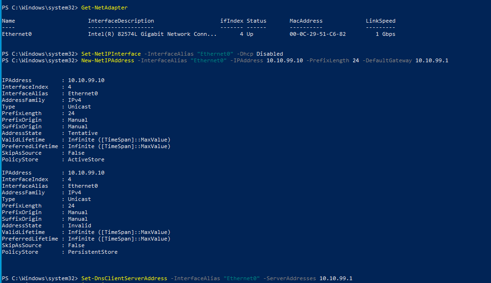
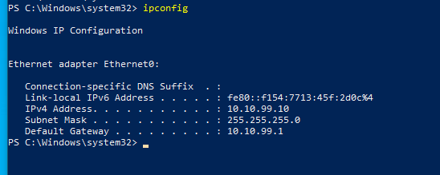
Proving that the VLAN tags cross VMware
To prove that the VLAN tags really cross VMware, we captured the trunk on SW01 while the Windows VM was pinging pfSense (10.10.99.1) :
sudo tcpdump -e -n -i trunk0 vlan
-> Expected: lines containing ethertype 802.1Q (0x8100) ... vlan 99 ... ICMP echo request, with the matching replies. It proves that the frames are really tagged on the trunk, instead of just assuming it.
Moving the management off the LAN
Because we no longer manage pfSense from the LAN (the management now lives on the MGMT VLAN), we disabled the webConfigurator anti-lockout rule (System › Advanced › Admin Access). That built-in rule always allows access to the GUI from the LAN interface, whatever the firewall rules say, and we no longer want that :
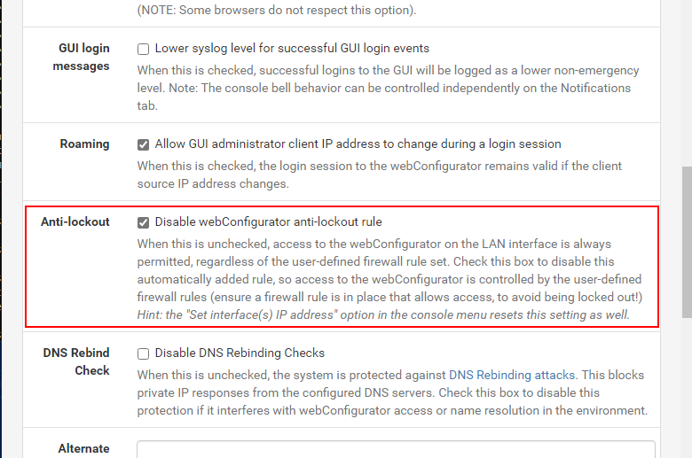
We also disabled the DHCP server on the LAN :
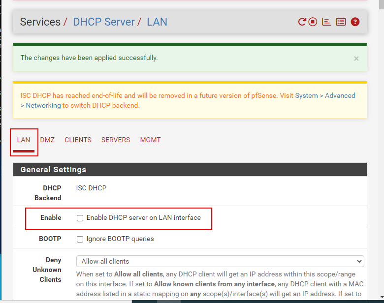
Finally, we removed the IP address from the LAN interface (IPv4 and IPv6 set to None) and renamed it TRUNK. It now only carries the VLANs. We also deleted the two default “allow LAN to any” firewall rules on the TRUNK tab, so nothing is allowed there :
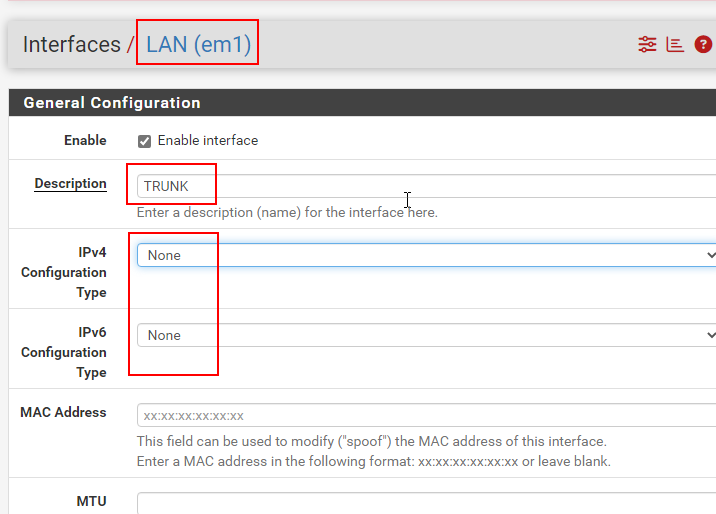
If pfSense refuses to set IPv6 to None with the errors “The DHCPv6 Server is active…” or “The Router Advertisements Server is active…”, first disable both services (Services › DHCPv6 Server & RA: untick DHCPv6, and set the Router Advertisement mode to Disabled for this interface), then set the interface type to None again.
DNS and Internet access
Now we need to fix DNS so the clients have Internet access. The clients use pfSense as their DNS server (its address on their own network, for example 10.10.99.1), and pfSense itself must use the VMware NAT gateway, 172.16.148.2, as its upstream DNS server (System › General Setup) :
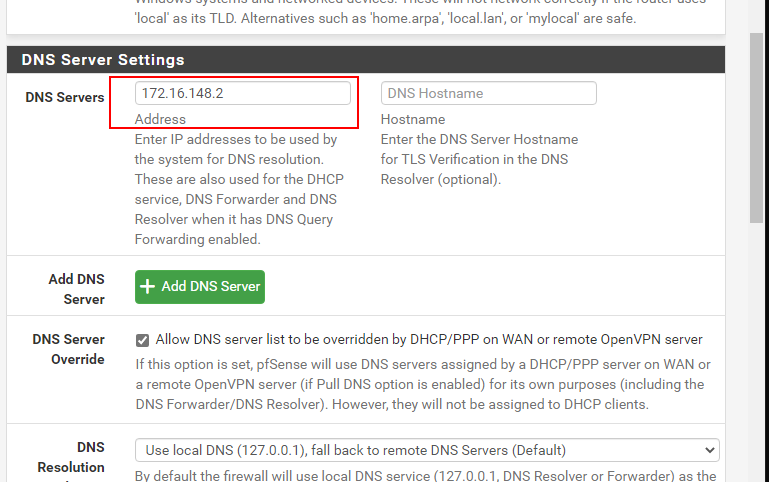
We also need to enable DNS Query Forwarding (Services › DNS Resolver) and untick DNSSEC. Reason: VMware's NAT only answers DNS queries sent to 172.16.148.2, and it does not pass DNSSEC records. Without these two settings the clients get “could not resolve host” and nslookup shows SERVFAIL :
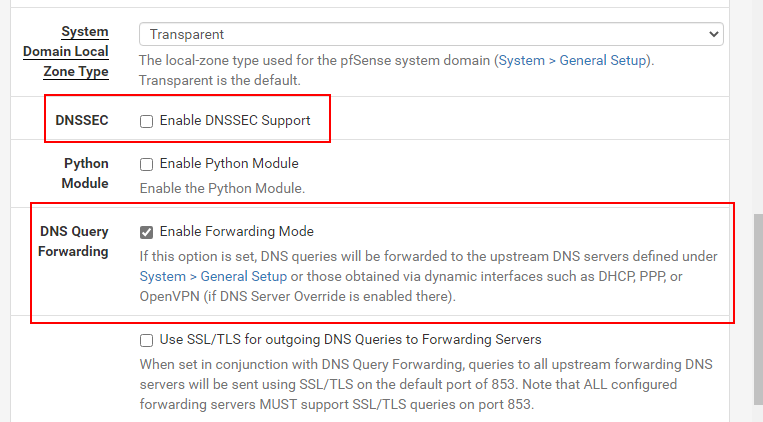
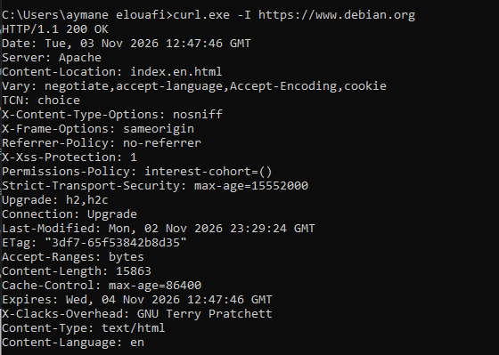
-> Proof: curl.exe -I https://www.debian.org from the Windows VM now returns HTTP 200.
The servers (endpoints)
Three Ubuntu Server 24.04 VMs, each with one job. Together they are the "company website": a visitor on the Internet reaches the proxy, which forwards to the web server, which reads its data from the database.
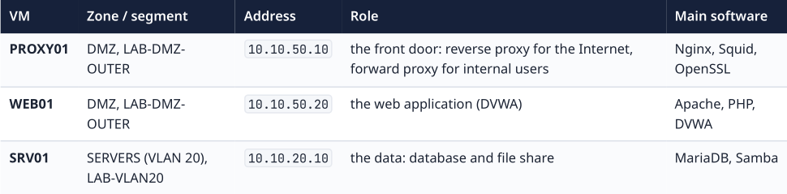
How the three servers were prepared
They are clones of one clean Ubuntu Server 24.04 VM. After cloning, each clone gets its own identity (otherwise the clones share the same machine-id and SSH host keys):
sudo rm -f /etc/machine-id && sudo systemd-machine-id-setup
sudo rm -f /etc/ssh/ssh_host_* && sudo ssh-keygen -A
sudo hostnamectl set-hostname web01 # proxy01 / web01 / srv01
sudo sed -i "s/^127.0.1.1.*/127.0.1.1 web01/" /etc/hosts
sudo reboot
The packages are installed while the VM is still on NAT (it has Internet), and the final network file and the firewall rules are only prepared. We apply them last, on the VM console, then move the adapter to its real LAN segment (WEB01 and PROXY01 → LAB-DMZ-OUTER, SRV01 → LAB-VLAN20):
sudo rm -f /etc/netplan/*.yaml
sudo mv /root/01-lab.yaml.new /etc/netplan/01-lab.yaml
sudo ufw enable
sudo poweroff
After a clone's identity is reset, your SSH client warns “REMOTE HOST IDENTIFICATION HAS CHANGED”. It is expected. Remove the old key with
ssh-keygen -R <ip>.
SRV01: the database and the file share
Zone: SERVERS (VLAN 20), address 10.10.20.10, gateway 10.10.20.1. It holds the data, so it is built first (WEB01 needs it).
MariaDB
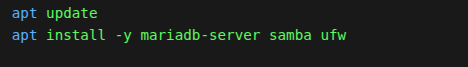
MariaDB is a MySQL-compatible database server. DVWA stores its users and test data in it.
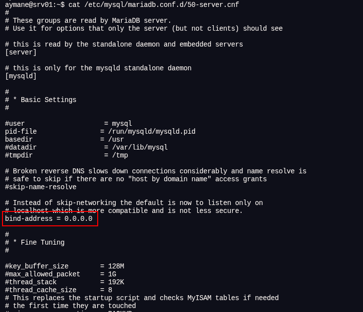
bind-address = 0.0.0.0 : by default MariaDB listens only on 127.0.0.1 (this VM). WEB01 is another machine, so MariaDB must listen on the network. The firewalls (pfSense and ufw) decide who may actually connect.
Then we created the database and a dedicated account for DVWA. The account can only connect from WEB01's IP address (in MariaDB an account is user@host) :
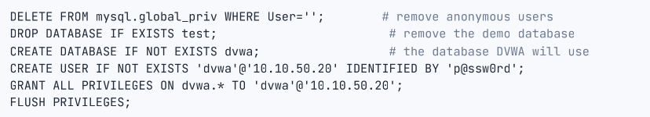
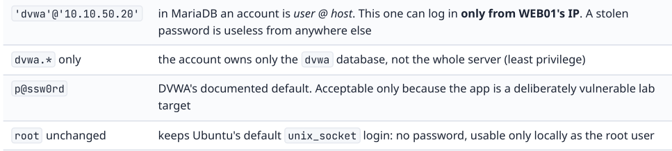
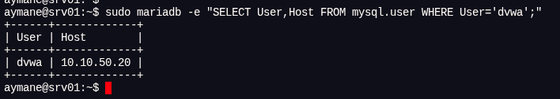
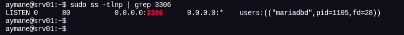
Samba: the file share for the CLIENTS
useradd -M -s /usr/sbin/nologin alice # a Linux account without home or login shell
smbpasswd -a -s alice # Samba password for alice (asked twice: it is a new password you choose)
mkdir -p /srv/share
echo "Q3 payroll summary - CONFIDENTIAL" > /srv/share/payroll.txt
chown -R alice: /srv/share && chmod 770 /srv/share
The share is defined in /etc/samba/smb.conf :
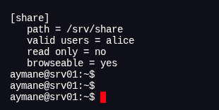
- Samba implements the Windows file-sharing protocol (SMB, port 445), so a Windows client can open
\\10.10.20.10\share. aliceexists twice: as a Linux account (owner of the files) and as a Samba user (with her own, separate Samba password).nologin: she can use the share but cannot log in to the server.payroll.txtis bait: a “confidential” file so the lab has something worth protecting.
Host firewall and network file
The ufw rules (SSH only from MGMT, the database only from WEB01, the file share only from CLIENTS) are prepared by the script and enabled at the end. ${WEB01_IP} and ${CLIENTS_NET} in the first screenshot are variables defined at the top of the script (10.10.50.20 and 10.10.10.0/24). The network file gives the server its static address in VLAN 20 :
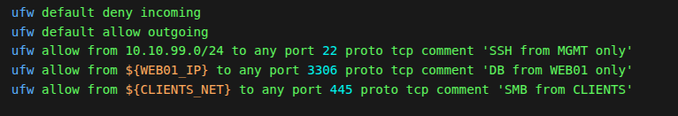
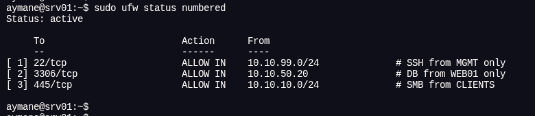
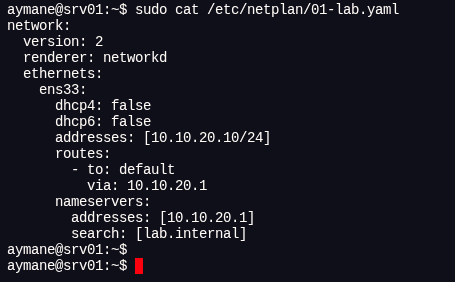
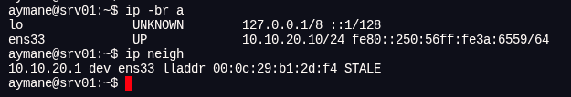
WEB01: Apache, PHP and DVWA
Zone: DMZ, address 10.10.50.20, gateway 10.10.50.1. It is the web application: the exposed and deliberately vulnerable part.
Installing the packages
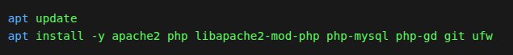
apache2: the web server. php + libapache2-mod-php: the language DVWA is written in, and the Apache module that runs it. php-mysql: lets PHP talk to MariaDB (on SRV01). php-gd: image functions (used by DVWA's CAPTCHA). git: to download DVWA.
DVWA: the target application
DVWA (Damn Vulnerable Web Application) is a web app that is vulnerable on purpose: SQL injection, command injection, file inclusion, brute force and more, with adjustable difficulty levels. It is the target of the attack phase.
rm -f /var/www/html/index.html
echo '<h1>WEB01 - lab.internal</h1>' > /var/www/html/index.html
git clone https://github.com/digininja/DVWA.git /var/www/html/dvwa
cd /var/www/html/dvwa/config
cp config.inc.php.dist config.inc.php
sed -i "/'db_server'/ s/'127\.0\.0\.1'/'10.10.20.10'/" config.inc.php # the database is on SRV01
chown -R www-data:www-data /var/www/html/dvwa/hackable/uploads /var/www/html/dvwa/config
# php.ini (all versions): allow_url_include = On, allow_url_fopen = On
www-datais the Linux user Apache runs as: it needs write access to the upload and config folders.allow_url_includeandallow_url_fopenare switched on inphp.inibecause DVWA's setup page checks them and its file-inclusion exercise needs them. They are normally off, because they are dangerous.
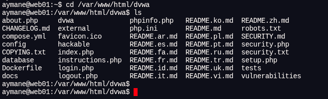
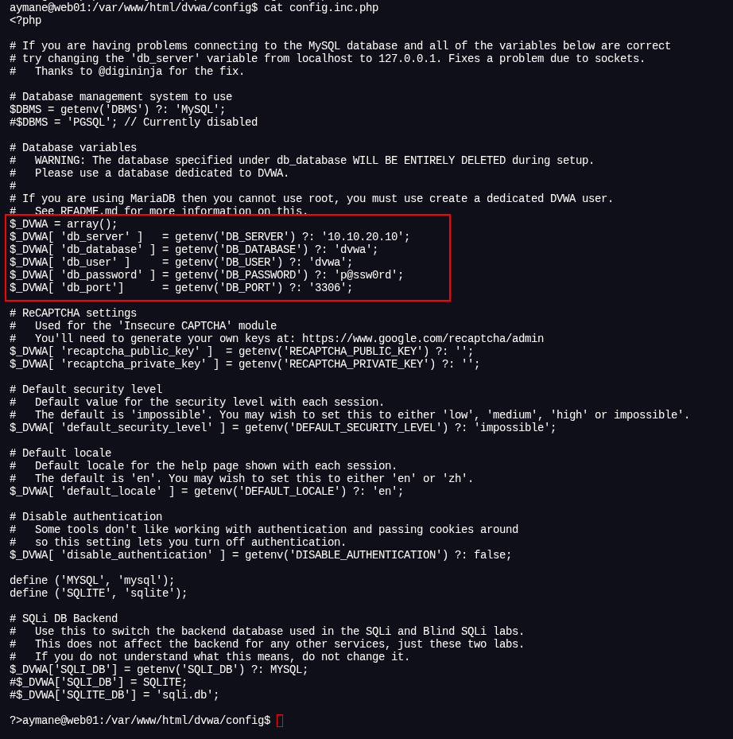
db_server = 10.10.20.10 : DVWA reads the database address from its config file. By default it points to 127.0.0.1; we point it at SRV01. The user dvwa, the database dvwa and the password p@ssw0rd are DVWA's defaults and already match the account created on SRV01.
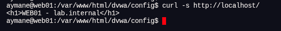
DVWA's setup page (“Create / Reset Database”) needs to reach SRV01 on port 3306, which pfSense blocks until the pinhole rule exists. That is why the database is created later, after the firewall policy (see the end of the firewall section).
Seeing the real visitor: mod_remoteip
Behind a reverse proxy, every request reaches Apache from 10.10.50.10 (the proxy), so the logs would show one single address for every visitor. Nginx adds the real client address in the X-Forwarded-For header, and Apache is told to trust that header only when it comes from PROXY01:
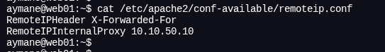
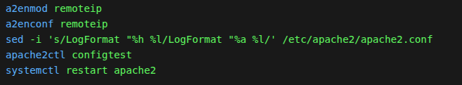
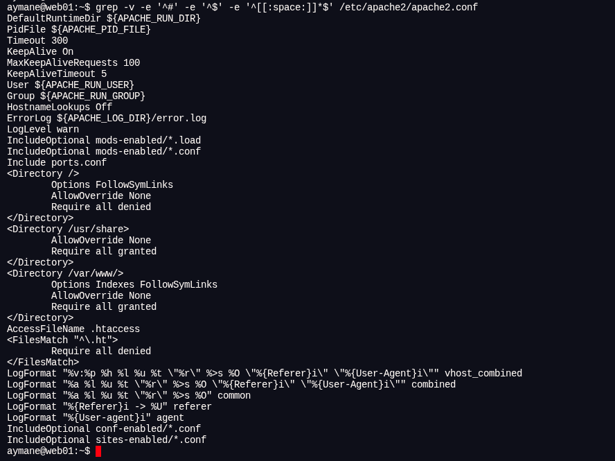
Why only from PROXY01: if Apache trusted X-Forwarded-For from anyone, an attacker could send a fake header and forge the address in the logs. The sed command changes the log format from %h (the connecting host, i.e. the proxy) to %a (the real client address).
Host firewall and network
ufw default deny incoming
ufw default allow outgoing
ufw allow from 10.10.99.0/24 to any port 22 proto tcp # SSH only from MGMT
ufw allow from 10.10.50.10 to any port 80 proto tcp # HTTP only from PROXY01
Even though WEB01 sits next to PROXY01 in the DMZ, it accepts HTTP from PROXY01 only. If a WAF is added in front of it later (WAF01, 10.10.50.30), that address will be added too. The network file gives WEB01 its static address (10.10.50.20/24):
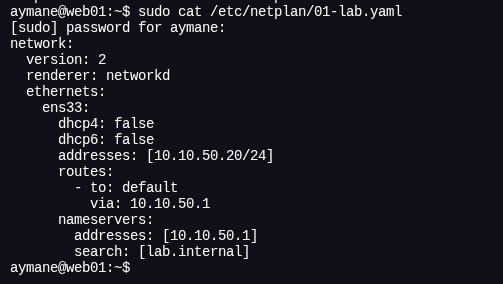
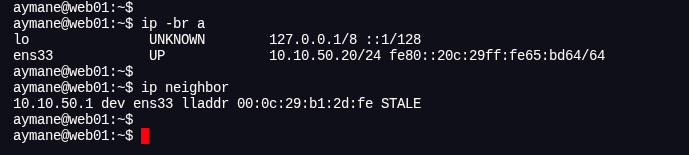
PROXY01: Nginx (reverse proxy) and Squid (forward proxy)
Zone: DMZ, address 10.10.50.10, gateway 10.10.50.1. It runs two proxies that do opposite jobs. They share a VM only to save one.
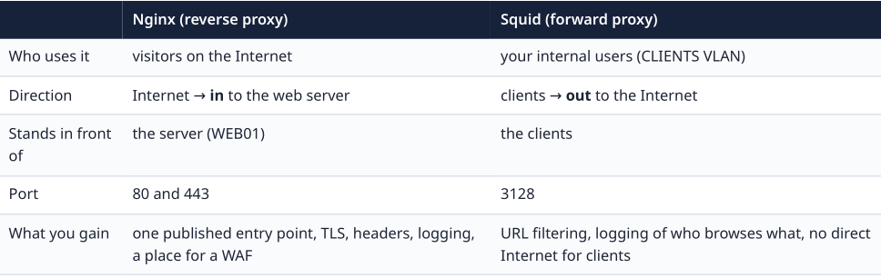
Installation and TLS certificate
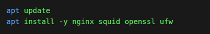
mkdir -p /etc/ssl/lab
openssl req -x509 -newkey rsa:2048 -nodes -days 825 \
-keyout /etc/ssl/lab/proxy01.key -out /etc/ssl/lab/proxy01.crt \
-subj "/CN=www.lab.internal" \
-addext "subjectAltName=DNS:www.lab.internal,IP:172.16.148.10,IP:10.10.50.10"
chmod 600 /etc/ssl/lab/proxy01.key
- A self-signed certificate (no real CA) lets Nginx serve HTTPS. Browsers show a warning, which is expected in a lab;
curl -kskips the check. subjectAltNamelists every name/IP the certificate is valid for:www.lab.internal, the WAN address, and the proxy's own address. This is the reason the WAN address was made static (.10): the certificate names it.- The private key is readable only by root (
chmod 600).
Nginx: the reverse proxy
The site file is /etc/nginx/sites-available/web01-rp :
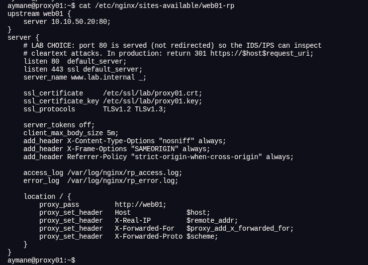
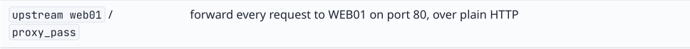
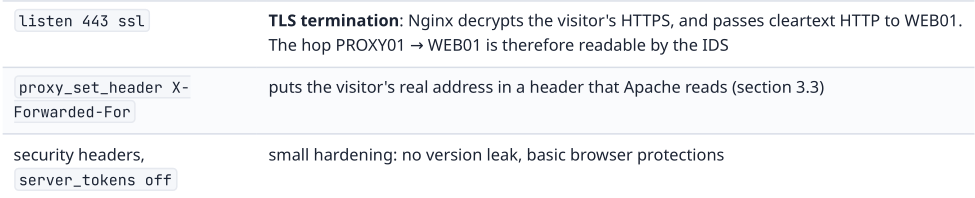
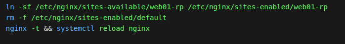
Squid: the forward proxy for the clients
Squid listens on port 3128. Our policy file only lets the CLIENTS network use it, blocks a list of sites, and hides the internal addresses (forwarded_for delete, via off) :
Host firewall and network
ufw default deny incoming
ufw default allow outgoing
ufw allow from 10.10.99.0/24 to any port 22 proto tcp # SSH only from MGMT
ufw allow 80/tcp # HTTP (Internet forward + clients)
ufw allow 443/tcp # HTTPS (Internet forward + clients)
ufw allow from 10.10.10.0/24 to any port 3128 proto tcp # Squid only for CLIENTS
The network file gives PROXY01 its static address (10.10.50.10/24, gateway and DNS: pfSense 10.10.50.1). To prove the whole chain from PROXY01 :
curl -s http://10.10.50.20/ # WEB01 - lab.internal (works only from PROXY01)
curl -sk https://localhost/ # the same page, through Nginx
sudo nginx -t ; sudo squid -k parse
The firewall policy
Now we return to the firewall and write the policy, based on what we configured :
How pfSense evaluates the rules
- A rule on interface X applies to the traffic entering pfSense from X. To control CLIENTS → SERVERS, the rule is written on the CLIENTS tab.
- First match wins, from top to bottom: specific pass rules first, broad blocks after.
- The firewall is stateful: the replies to an allowed connection are allowed automatically.
- If nothing matches, the traffic is dropped (implicit default deny). A new interface has no rules, so it blocks everything.
- On the WAN, NAT happens before filtering: the rule that allows a port forward uses the internal address (
10.10.50.10), not the WAN address.
Aliases (Firewall › Aliases)
-> Why RFC1918 : “never initiate to another internal zone” needs a name for “any private network”, otherwise every subnet would have to be listed in every rule.
Port forwards: publishing the website
-> WAN 80 and 443 are redirected to PROXY01 (never directly to WEB01), with an associated filter rule created automatically. Outbound NAT stays on Automatic. The GUI also listens on 443, but the forward only applies to traffic arriving on the WAN, so https://10.10.99.1 from MGMT still reaches the GUI.
Rules per interface
Every Block rule has logging enabled.
DMZ
-> Rule 1 is the only hole between the DMZ and the inside: WEB01 → SRV01 on port 3306. It comes before the “block RFC1918” rule, because the first matching rule wins (SRV01 is inside the private range, so if the block came first DVWA could never reach its database).
CLIENTS
-> Clients may only use DNS and ping on pfSense, the proxy (PROXY01, ports 80, 443 and 3128), and the file share (SRV01, port 445). Everything else, including direct web access, is blocked and logged.
SERVERS
-> Servers never start connections towards the other zones (RFC1918 block). They only get updates (ports 80/443) and NTP. There is no rule for the database's replies: WEB01 opens the connection, so the replies belong to that state and pass automatically.
MGMT
-> One single rule: MGMT → any, with the protocol set to Any (a TCP-only rule lets the GUI in but blocks ping). In production this would be restricted too.
WAN
Only the two rules created by the port forwards.
TRUNK
No rules.
Testing the policy
From the VMs and from the “Internet” (the laptop) :
DVWA's database is created from a browser: http://10.10.50.10/dvwa/setup.php → Create / Reset Database, then log in with admin / password and set DVWA Security to Low.
# from WEB01: the pinhole works, the rest is blocked
nc -zv -w2 10.10.20.10 3306 # succeeds
nc -zv -w2 10.10.20.10 445 # times out
# from SRV01: updates are allowed, the DMZ is not reachable
curl -I https://www.debian.org # HTTP 200
nc -zv -w2 10.10.50.20 80 # times out
# from the laptop (the “Internet”): only the published ports answer
curl -I http://172.16.148.10/dvwa/login.php
curl -kI https://172.16.148.10/dvwa/login.php
nmap -Pn -p 22,445,3306 172.16.148.10 # all filtered
Every blocked test must also appear in pfSense (Status › System Logs › Firewall), with the rule that blocked it. On WEB01, sudo tail -3 /var/log/apache2/access.log should show the laptop's real address (172.16.148.1) and not the proxy's, thanks to mod_remoteip.
Operating pfSense: watching it work
Things we would change for a production environment
The Suricata sensor: what we built
What Suricata is
Suricata is an open-source network IDS/IPS: it reads packets, rebuilds the connections, decodes the protocols (HTTP, DNS, TLS, SMB ...) and compares them to rules, writing an alert when one matches. In IDS mode it only watches and alerts; in IPS mode (a later phase) it sits inline and can drop packets. We start with IDS: a wrong alert only wastes time, a wrong block breaks the network. IDS01 is a separate VM that watches copies of the traffic: it is not in the path.
Where the sensor sits and what it can see
Four NICs and what each is for
-> The capture NICs have no IP address: a card without an address cannot be scanned or attacked, so the sensor is invisible on the networks it watches. They also have the checksum/segmentation offloads (GRO, LRO, TSO ...) turned off, so Suricata sees the real packets and not merged “super-packets”.
Installing Suricata
sudo add-apt-repository -y ppa:oisf/suricata-stable
sudo apt update
sudo apt install -y suricata jq ethtool
sudo suricata-update # downloads Emerging Threats Open into /var/lib/suricata/rules/suricata.rules
ppa:oisf/suricata-stableis the project's own repository: Ubuntu's package is several versions behind.jqreads JSON logs on the command line, andethtoolchecks the NIC offloads.suricata-updatedownloads the Emerging Threats Open ruleset and merges it into one file. The service may start right after the installation, so we stop it (sudo systemctl stop suricata) until it is configured.
-> Suricata 8.0.8 is installed, and the downloaded ruleset (44 MB) contains about 53,000 alert rules.
Configuring Suricata (suricata.yaml)
The main file is /etc/suricata/suricata.yaml. We keep a backup (suricata.yaml.orig) and change only a few settings: the network variables, the capture interfaces, community-id, the rule files and the threshold file.
The capture interfaces (AF_PACKET)
AF_PACKET is the Linux kernel's native capture method. There is one block per capture point: dmzfw0 (the DMZ, pfSense side) and tap0 (the VLAN trunk).
Writing our own rules
alert http any any -> $HOME_NET any (msg:"LAB Command injection attempt DVWA exec"; flow:established,to_server; http.uri; content:"/vulnerabilities/exec/"; http.request_body; pcre:"/ip=[^&]*(%3B|%7C|%26|\x3B|\x7C)/i"; classtype:web-application-attack; sid:1000005; rev:1;)
A rule is action protocol source -> destination (options). This one raises an alert when someone sends a command-injection attempt to DVWA's exec page. A raw ; inside an option would end the option, so the separators are written in hex in the regular expression (\x3B and \x7C). The table below explains each part :
-> In the attack phase we will go deeper into the rules, because we will run real attack simulations and write the IDS rules to detect them.
Reading the output
sudo tail -f /var/log/suricata/fast.log # one text line per alert, live
sudo jq -r '.event_type' /var/log/suricata/eve.json | sort | uniq -c | sort -rn # which kinds of events exist
Network configuration of IDS01 (netplan)
The netplan file matches each card by its MAC address and renames it (mgmt0, dmzfw0, dmzsrv0, tap0). Only mgmt0 has an IP address (10.10.99.20/24). The capture cards have no IPv4, no IPv6 and not even a link-local address, and their offloads are off. Our first script guessed the order of the cards from the Linux names and three MAC addresses came out rotated: the sensor would have listened to the wrong network without any error. Always compare the MACs with VMware's Network Adapter › Advanced page.
-> ip -br link shows the four cards, and ip -br a shows that only mgmt0 has an address.
Starting Suricata
sudo suricata -T -c /etc/suricata/suricata.yaml -v # test the configuration: it must end with "successfully loaded"
sudo systemctl enable --now suricata # start now and at every boot
sudo tail -f /var/log/suricata/suricata.log # look for: dmzfw0: creating 1 thread, tap0: creating 1 thread, Engine started
Loading the ~53,000 rules takes about half a minute.
Next step: the attack phase.